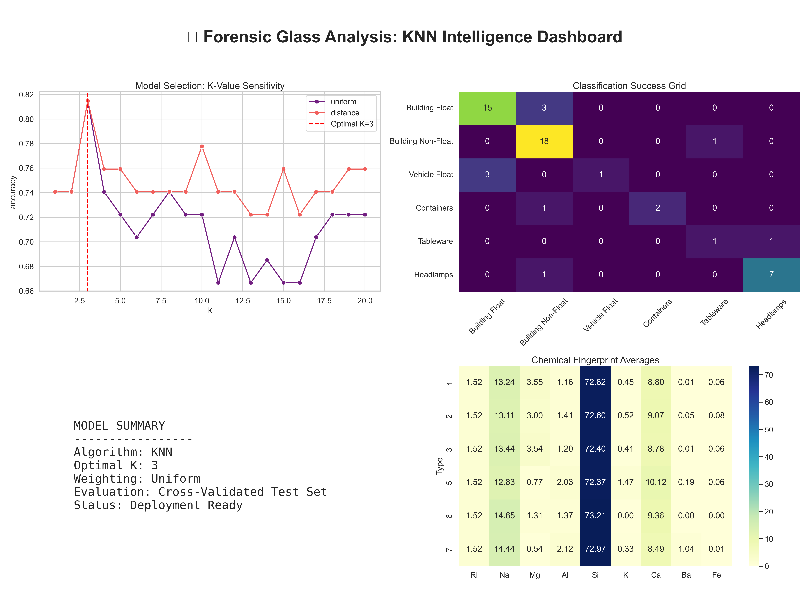
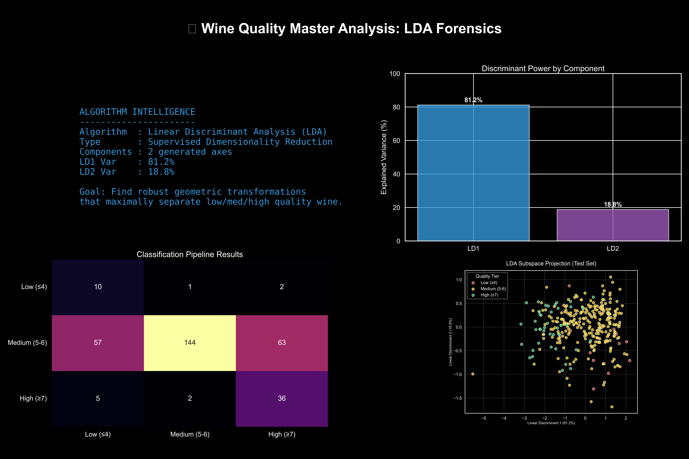
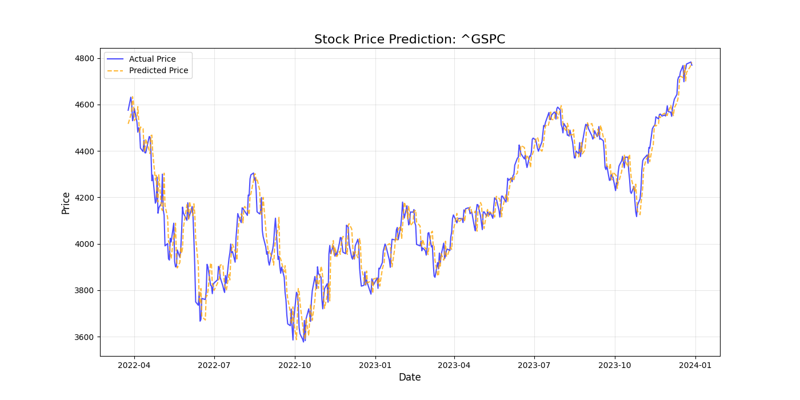
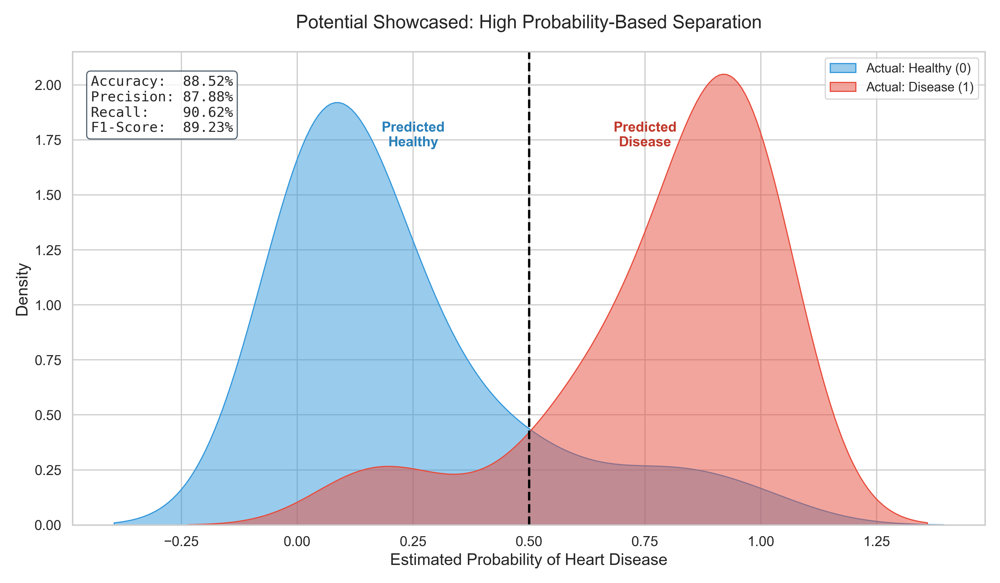
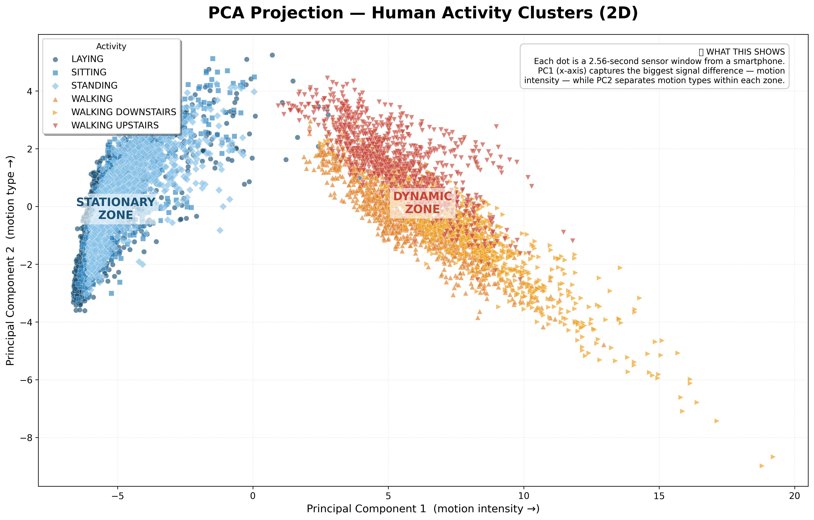
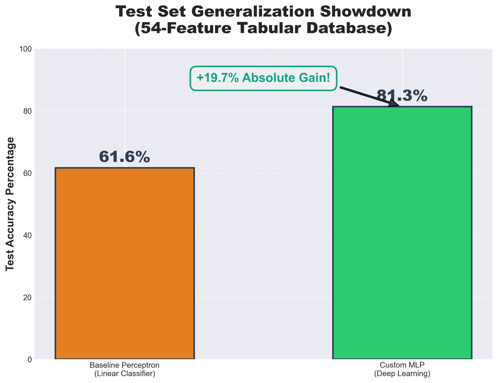
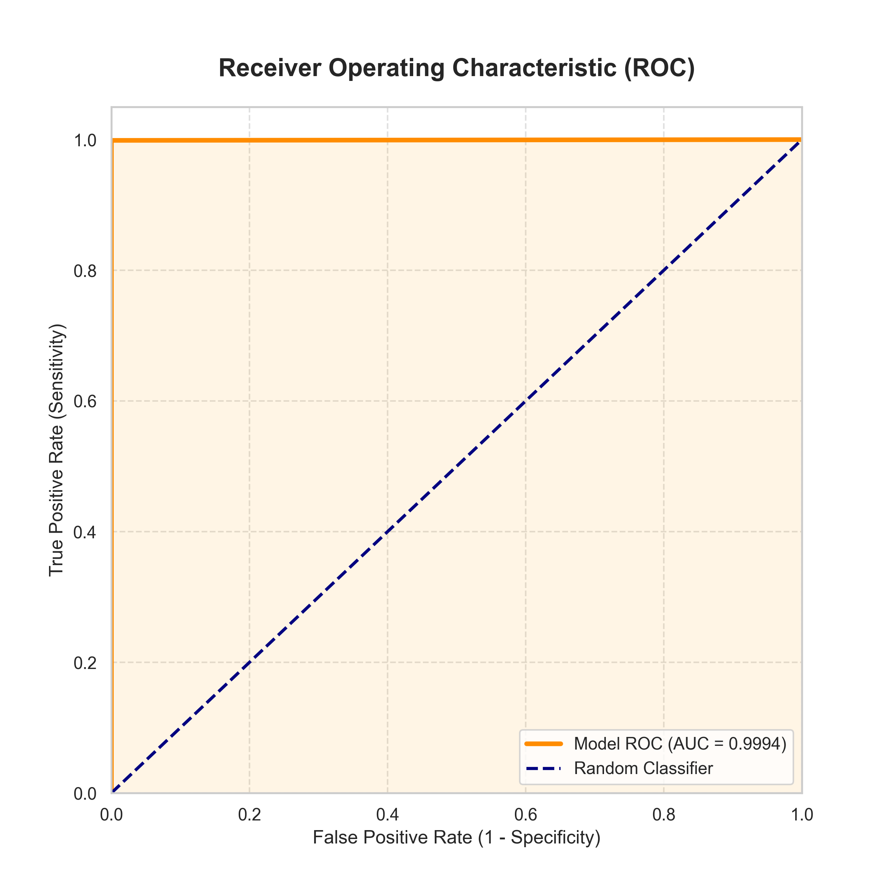
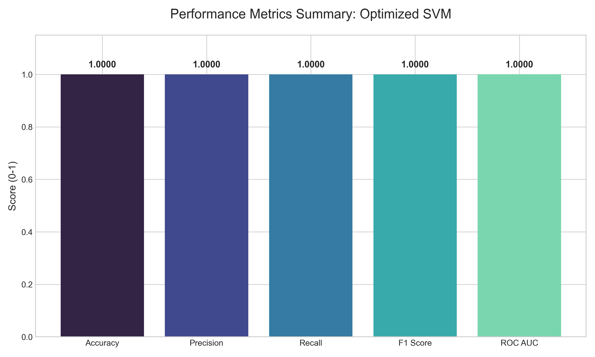

Core Research & Implementations

Temporal Neural Architects
A rigorous, end-to-end comparison of 7 recurrent neural network architectures—from Vanilla RNNs to Attention-based LSTMs and Seq2Seq—on real-world temperature forecasting tasks.
NLP Intelligence
Comparative study of classical vs. deep sequential word representations for sentiment and topic classification.

Visualizing Cognitive Decline
Ensemble of advanced CNN architectures achieving 95.4% accuracy, rigorously validated with Grad-CAM and SHAP.

Forensic Intelligence
A ground-up implementation of K-Nearest Neighbors for high-precision glass classification in forensic science.

The Geometry of Taste
Applying Linear Discriminant Analysis to derive the mathematical latent space of wine quality features.

Predicting Markets
Multivariate Linear Regression model analyzing S&P 500 trends using real-time Yahoo Finance historical data.

Heartbeat Analytics
Custom mathematical Logistic Inference engine for predicting cardiovascular risk with high interpretability.

Signal Compression
Achieving 91% sensor signal reduction via Principal Component Analysis for real-time activity recognition.

Deep Foundations
Building a multi-layer Perceptron from scratch using pure NumPy to classify complex forest cover-types.

Secure Transactions
A robust Fraud Detection Engine leveraging Random Forest ensembles to reach 0.9994 ROC-AUC performance.

Extreme Stability
Leveraging RBF-Kernel Support Vector Machines for the high-stakes classification of mushroom toxicity.